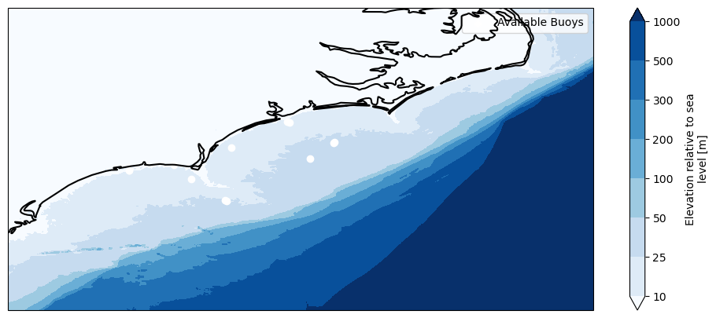
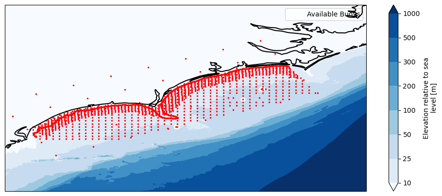
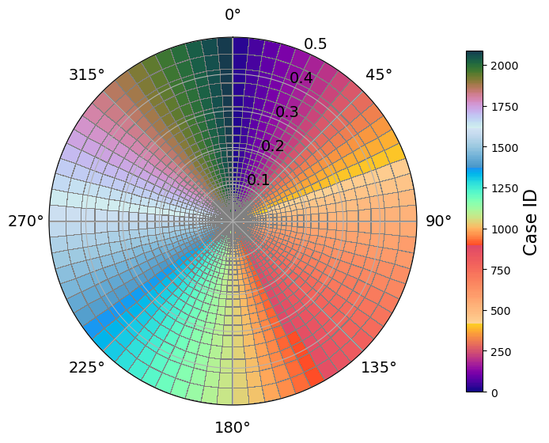
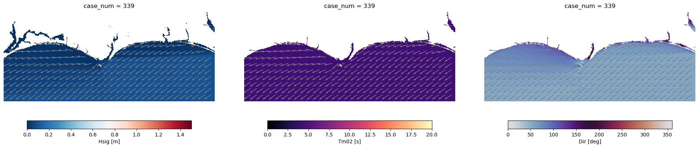

🌊 BinWaves GridI01(Propagation)#
Inputs:
Bathymetry file in
.ncformat, located in theinputs/folder.ℹ️ NOTE: If bathymetry data for the study area is not available, free GEBCO bathymetry (~400 m resolution) can be used:
Download GEBCO bathymetry data: https://download.gebco.net/
Example notebook for working with GEBCO data:
Download_GEBCO_Bathymetry_Data.ipynbOutputs:
SWAN case configuration in
.csvformat.
Kp_coefficients.ncfile saved in theoutputs/folder.Create this
outputs/folder if not available!
BinWaves Notebooks Overview#
This Jupyter Notebook is the first of three in the BinWaves modeling workflow, following Cagigal et al., 2024 :
BinWaves_Propagation.ipynbBinWaves_Reconstruction.ipynbBinWaves_Validation.ipynb
Before You Start#
Make sure you have:
Installed the latest version of
bluemath-tk:pip install bluemath-tk[waves]
📁 BinWaves_Propagation.ipynb
This notebook constructs and runs the library of pre-run cases for all monochromatic wave systems.
📁 BinWaves_Reconstruction.ipynb
This notebook reconstructs wave conditions using offshore directional wave spectra.
Requirements:#
Offshore wave spectrum data (e.g., CAWCR or ERA5 datasets).
OPTIONAL 1: Apply satellite corrections to the hindcast spectrum before running BinWaves using the
CalValtool in the BlueMath toolkit. An example is provided in the Jupyter Notebook P00A_CalVal_Carolinas_CAWCR_4469.ipynb.OPTIONAL 2: A Super Point Spectrum can be also used as input to the hindcast spectrum before running BinWaves. The
SuperPointaggregates the energy from a number of points (Wave Spectra) surrounding the study site (Cagigal et al., 2021). An example is provided in the Jupyter Notebook Super Point Computation .
📁 BinWaves_Validation.ipynb
This notebook performs validation using wave buoy data, if available.
Requirements:#
Wave buoy data in a format compatible with BinWaves (if available).
Some wave buoy data can be freely downloaded from:
🌊 https://www.ndbc.noaa.gov/NOTE: You can use the
NDBC_buoy_data.ipynbnotebook to:Download the buoy data.
Convert it into the appropriate format for BinWaves.
📌 In This Notebook: BinWaves_Propagation.ipynb#
This notebook handles the construction of the wave propagation library by simulating wave cases.
Steps:#
Generate wave conditions for all specified frequencies and directions.
Set up and run SWAN simulations.
Extract and save outputs from each simulation.
Visualize the full wave library, including larger illustrative examples.
⚠️ Coordinate System Note
The BinWaves (SWAN) model can run in either Spherical or Cartesian coordinates:
Use spherical coordinates for areas larger than 100 km.
Make sure your bathymetry file matches the coordinate system used in your simulation.
Generate computational bathymetry#
⚠️ NOTE
Functions expect coordinate columns to follow standard naming conventions.
For geographic coordinates, use: ‘lon’, ‘lat’, ‘longitude’, or ‘latitude’.
For UTM coordinates, use: ‘x’, ‘y’, ‘X’, ‘Y’, ‘cx’, ‘cy’, ‘easting’, or ‘northing’.
Ensure your data uses one of these names—otherwise, rename the coordinates accordingly
The bathymetry should have positive values for sea and negative values for land.
import xarray as xr
import sys
sys.path.append('../utils')
from plotting import detect_coordinate_system
ds = xr.open_dataset("../inputs/gebco_bathymetry.nc")
coords = detect_coordinate_system(ds)
is_geographic = coords["is_geographic"]
x_coord = coords["x_coord"]
y_coord = coords["y_coord"]
bathy = -(ds.transpose(y_coord, x_coord).sortby(y_coord, ascending=False).elevation)
bathy
<xarray.DataArray 'elevation' (lat: 1342, lon: 1533)> Size: 4MB
array([[-297, -278, -270, ..., 2808, 2810, 2813],
[-273, -282, -270, ..., 2811, 2812, 2812],
[-272, -256, -254, ..., 2814, 2815, 2813],
...,
[ 64, 65, 65, ..., 5320, 5322, 5322],
[ 65, 66, 65, ..., 5322, 5322, 5322],
[ 66, 66, 66, ..., 5325, 5324, 5322]],
shape=(1342, 1533), dtype=int16)
Coordinates:
* lat (lat) float64 11kB 37.57 37.57 37.56 37.56 ... 31.99 31.99 31.99
* lon (lon) float64 12kB -79.39 -79.39 -79.39 ... -73.02 -73.01 -73.01
Attributes:
standard_name: height_above_mean_sea_level
long_name: Elevation relative to sea level
units: m
grid_mapping: crs
sdn_parameter_urn: SDN:P01::BATHHGHT
sdn_parameter_name: Sea floor height (above mean sea level) {bathymetric...
sdn_uom_urn: SDN:P06::ULAA
sdn_uom_name: Metres# Crop bathymetry
cropped_bathy = bathy.sel(lat=slice(36, 31), lon=slice(-81,-75))
cropped_bathy.to_netcdf("outputs/bathy.nc")
cropped_bathy
<xarray.DataArray 'elevation' (lat: 964, lon: 1055)> Size: 2MB
array([[-179, -180, -179, ..., 36, 38, 40],
[-180, -186, -183, ..., 38, 40, 41],
[-188, -188, -188, ..., 38, 39, 40],
...,
[ 64, 65, 65, ..., 3933, 3936, 3942],
[ 65, 66, 65, ..., 3927, 3930, 3938],
[ 66, 66, 66, ..., 3921, 3928, 3934]],
shape=(964, 1055), dtype=int16)
Coordinates:
* lat (lat) float64 8kB 36.0 35.99 35.99 35.99 ... 32.0 31.99 31.99 31.99
* lon (lon) float64 8kB -79.39 -79.39 -79.39 ... -75.01 -75.01 -75.0
Attributes:
standard_name: height_above_mean_sea_level
long_name: Elevation relative to sea level
units: m
grid_mapping: crs
sdn_parameter_urn: SDN:P01::BATHHGHT
sdn_parameter_name: Sea floor height (above mean sea level) {bathymetric...
sdn_uom_urn: SDN:P06::ULAA
sdn_uom_name: Metresdef get_buoy_coords(buoys):
"""Extract coordinates from buoys, whether dict or iterable of tuples."""
if isinstance(buoys, dict):
return np.array(list(buoys.values()))
else:
return np.array(list(buoys))
from plotting import plot_selected_bathy
# if NOT buoys or other locations of interest just run plot_selected_bathy(bathy=bathy)
buoys_geo = {
'SSBN7': (-78.484, 33.838),
'41119': (-78.483, 33.842),
'OCPN7': (-78.147, 33.911),
'41108': (-78.016, 33.721),
'41013': (-77.764, 33.441),
'41110': (-77.715, 34.142),
'41109': (-77.300 ,34.484 ),
'41035': (-77.281 ,34.476),
'41036': (-76.949 , 34.207),
'41159': (-76.944, 34.211),
'WHACS2': (-77.125,34.0),
'WHACS': (-77.75, 33.4375),
}
plot_selected_bathy(bathy=cropped_bathy, buoys=buoys_geo)

SWAN Grid Parameters#
This section defines the computational grid for running the SWAN model:
xpc,ypc: Origin coordinates of the grid (in meters for Cartesian, degrees for spherical).Default =
0.0for Cartesian; required for spherical.
alpc: Angle of the positive x-axis (degrees, Cartesian convention).Default =
0.0.
xlenc,ylenc: Grid length in the x- and y-directions.Units: meters (Cartesian), degrees (spherical).
mxc,myc: Number of grid cells in x- and y-directions (1 less than number of grid points).In 1D mode,
myc=0.

Grid Parameters#
xpc = -78.3750
ypc = 33.125
alpc = 27
xlenc = 1.6
ylenc = 1.2
from bluemath_tk.topo_bathy.swan_grid import generate_grid_parameters
grid_parameters, cropped_bathy, corners = generate_grid_parameters(
cropped_bathy, alpc, xpc, ypc, xlenc, ylenc, buffer_distance=1
)
grid_parameters
Cropping bounds: x=[-79.91978859968745, -75.94938956129862], y=[32.125, 35.92059262860931]
{'xpc': -78.375,
'ypc': 33.125,
'alpc': 27,
'xlenc': 1.6,
'ylenc': 1.2,
'mxc': 383,
'myc': 287,
'xpinp': np.float64(-79.39375),
'ypinp': np.float64(32.12708333333333),
'alpinp': 0,
'mxinp': 826,
'myinp': 910,
'dxinp': np.float64(0.004166666666662877),
'dyinp': np.float64(0.004166666666677088)}
Desired locations for Model outputs#
⚠️ NOTE
Output location spacing (out_dx, out_dy) can be specified. If not provided, the output locations will use the same spacing as the SWAN grid. However, for large domains or very fine SWAN grids, it is recommended to decrease the output spacing to reduce computational cost, at least at tasting stages.
Crop output with 10m depth countour#
# polygon = [
# [grid_parameters['xpc'] , grid_parameters['ypc'] ],
# [grid_parameters['xpc']+grid_parameters['xlenc'], grid_parameters['ypc'] ],
# [grid_parameters['xpc']+grid_parameters['xlenc'], grid_parameters['ypc']+grid_parameters['ylenc']],
# [grid_parameters['xpc'] , grid_parameters['ypc']+grid_parameters['ylenc']],
# [grid_parameters['xpc'] , grid_parameters['ypc'] ]
# ]
# Create a Path object for the polygon
from matplotlib.path import Path
polygon = Path(corners)
polygon
Path(array([[-78.375 , 33.125 ],
[-76.94938956, 33.8513848 ],
[-77.49417816, 34.92059263],
[-78.9197886 , 34.19420783],
[-78.375 , 33.125 ]]), None)
import numpy as np
import matplotlib.pyplot as plt
# Extension amount (in degrees)
extension = .6 # 1 degree
# Convert angle to radians
alpc_rad = np.radians(alpc)
# To extend in the NEGATIVE xc direction (opposite to alpc arrow)
# We move the origin at angle (alpc + 180)
angle_extension = np.radians(alpc + 180)
# Calculate NEW origin (the orange point you want)
xpc_new = xpc + extension * np.cos(angle_extension)
ypc_new = ypc + extension * np.sin(angle_extension)
# New xlenc (extended by 1 degree in xc direction)
xlenc_new = xlenc + extension
ylenc_new = ylenc # unchanged
# Function to create rectangle corners
def get_rectangle_corners(xpc, ypc, alpc, xlenc, ylenc):
"""Get the corners of the rotated rectangle in problem coordinates"""
alpc_rad = np.radians(alpc)
corners_local = np.array([
[0, 0],
[xlenc, 0],
[xlenc, ylenc],
[0, ylenc],
[0, 0]
])
corners_problem = []
for xc, yc in corners_local:
xp = xpc + xc * np.cos(alpc_rad) - yc * np.sin(alpc_rad)
yp = ypc + xc * np.sin(alpc_rad) + yc * np.cos(alpc_rad)
corners_problem.append([xp, yp])
return np.array(corners_problem)
# Get corners for both rectangles
corners_original = get_rectangle_corners(xpc, ypc, alpc, xlenc, ylenc)
corners_new = get_rectangle_corners(xpc_new, ypc_new, alpc, xlenc_new, ylenc_new)
# Create the plot
plt.figure(figsize=(14, 10))
# Plot extended rectangle (YELLOW - what you want)
plt.plot(corners_new[:, 0], corners_new[:, 1],
'orange', linewidth=3, label='Extended rectangle (what you want)', zorder=4)
plt.fill(corners_new[:, 0], corners_new[:, 1],
color='yellow', alpha=0.5, zorder=3)
# Plot original rectangle (blue/gray)
plt.plot(corners_original[:, 0], corners_original[:, 1],
'b-', linewidth=3, label='Original rectangle', zorder=2)
plt.fill(corners_original[:, 0], corners_original[:, 1],
color='gray', alpha=0.5, zorder=1)
# Plot origin points
plt.plot(xpc, ypc, 'ro', markersize=14,
label=f'Original origin (red circle)', zorder=6)
plt.plot(xpc_new, ypc_new, 'o', color='orange', markersize=14,
label=f'New origin (ANSWER - orange point)', zorder=6)
# Add text labels
plt.text(xpc-0.02, ypc, 'xpc,ypc ', fontsize=11, fontweight='bold',
ha='right', va='center', color='red')
plt.text(xpc_new-0.02, ypc_new, '? ', fontsize=14, fontweight='bold',
ha='right', va='center', color='orange')
# Add axis direction arrow from ORIGINAL origin
arrow_length = 0.3
plt.arrow(xpc, ypc, arrow_length * np.cos(alpc_rad),
arrow_length * np.sin(alpc_rad),
head_width=0.03, head_length=0.02, fc='red', ec='red',
linewidth=3, zorder=5)
plt.text(xpc + arrow_length * np.cos(alpc_rad) * 0.6,
ypc + arrow_length * np.sin(alpc_rad) * 0.6,
f'alpc={alpc}°', fontsize=11, fontweight='bold', color='red',
bbox=dict(boxstyle='round', facecolor='white', alpha=0.8))
# Labels and formatting
plt.xlabel('Longitude (°)', fontsize=13, fontweight='bold')
plt.ylabel('Latitude (°)', fontsize=13, fontweight='bold')
plt.title(f'Extension in -xc direction (Extension = {extension}°, Angle = {alpc}° PRESERVED)',
fontsize=14, fontweight='bold')
plt.legend(loc='best', fontsize=10)
plt.grid(True, alpha=0.3, linestyle='--')
plt.axis('equal')
plt.tight_layout()
# Print the answer
print("="*60)
print("ANSWER: New origin coordinates")
print("="*60)
print(f"Original origin (red circle): xpc = {xpc:.6f}°, ypc = {ypc:.6f}°")
print(f"NEW origin (orange point): xpc = {xpc_new:.6f}°, ypc = {ypc_new:.6f}°")
print(f"\nOriginal xlenc: {xlenc}°")
print(f"New xlenc: {xlenc_new}°")
print(f"ylenc (unchanged): {ylenc}°")
print(f"alpc (PRESERVED): {alpc}°")
print(f"\nShift: Δx = {xpc_new - xpc:.6f}°, Δy = {ypc_new - ypc:.6f}°")
print("="*60)
# Original parameters
xpc = xpc_new
ypc = ypc_new
alpc = alpc # angle in degrees - PRESERVED
xlenc = xlenc+extension*2
ylenc = ylenc
from bluemath_tk.topo_bathy.swan_grid import generate_grid_parameters
grid_parameters, cropped_bathy, corners = generate_grid_parameters(
cropped_bathy, alpc, xpc, ypc, xlenc, ylenc, buffer_distance=1
)
grid_parameters
Cropping bounds: x=[-80.45439251420048, -75.4147856467856], y=[31.852605700156275, 36.192986928453045]
{'xpc': np.float64(-78.90960391451303),
'ypc': np.float64(32.852605700156275),
'alpc': 27,
'xlenc': 2.8,
'ylenc': 1.2,
'mxc': 671,
'myc': 287,
'xpinp': np.float64(-79.39375),
'ypinp': np.float64(32.12708333333333),
'alpinp': 0,
'mxinp': 826,
'myinp': 910,
'dxinp': np.float64(0.004166666666662877),
'dyinp': np.float64(0.004166666666677088)}
# Create a Path object for the polygon
from matplotlib.path import Path
polygon = Path(corners)
polygon
Path(array([[-78.90960391, 32.8526057 ],
[-76.41478565, 34.1237791 ],
[-76.95957425, 35.19298693],
[-79.45439251, 33.92181353],
[-78.90960391, 32.8526057 ]]), None)
# For isobath points
import geopandas as gpd
import json
import numpy as np
geojson_path = '../inputs/isobath_10m_points_500m.geojson'
# If using geopandas
import geopandas as gpd
gdf = gpd.read_file(geojson_path)
gdf['lon'] = gdf.geometry.x
gdf['lat'] = gdf.geometry.y
# Extract all points as array
isobath_all_points = np.array(list(zip(gdf['lon'], gdf['lat'])))
# Check which points are inside the polygon
isobath_inside_mask = polygon.contains_points(isobath_all_points)
isobath_points_in_area = isobath_all_points[isobath_inside_mask]
print(f"Total isobath points: {len(isobath_all_points)}")
print(f"Isobath points inside polygon: {len(isobath_points_in_area)}")
Total isobath points: 2244
Isobath points inside polygon: 760
# OUTPUT GRID LOCATIONS (KPS)
import numpy as np
from operations import locations_grid_outputs
locations = locations_grid_outputs(grid_parameters, out_dx=0.135*3, out_dy=0.1*3 )
# Combine grid locations with buoy locations
buoy_coords = get_buoy_coords(buoys_geo)
locations = np.vstack((locations, buoy_coords))
# Add isobath points
locations = np.vstack((locations, isobath_points_in_area))
print(f"Total locations (grid + buoys + isobath): {len(locations)}")
Total locations (grid + buoys + isobath): 812
# Load the WHACS points JSON file
outputs_3km_path = '../inputs/outputs_3km.json'
with open(outputs_3km_path, 'r') as f:
outputs_3km_data = json.load(f)
# Extract all WHACS points
all_outputs_3km_points = []
all_outputs_3km_ids = []
for feature in outputs_3km_data['features']:
lon, lat = feature['geometry']['coordinates']
all_outputs_3km_points.append((lon, lat))
all_outputs_3km_ids.append(feature['properties']['id'])
all_outputs_3km_points = np.array(all_outputs_3km_points)
print(f"Total outputs 3km points in file: {len(all_outputs_3km_points)}")
# Check which points are inside the polygon
points_inside_mask = polygon.contains_points(all_outputs_3km_points)
outputs_3km_points_in_area = all_outputs_3km_points[points_inside_mask]
outputs_3km_ids_in_area = [all_outputs_3km_ids[i] for i in range(len(all_outputs_3km_ids)) if points_inside_mask[i]]
print(f"outputs 3km points inside polygon: {len(outputs_3km_points_in_area)}")
# Subsample if needed
subsample_step = 1 # Set to 1 for all points, or higher to subsample
outputs_3km_points_array = outputs_3km_points_in_area[::subsample_step]
print(f"outputs 3km points after subsampling (every {subsample_step}): {len(outputs_3km_points_array)}")
locations = np.vstack((locations, outputs_3km_points_array))
print(f"Total locations (grid + buoys + isobath + 3km): {len(locations)}")
Total outputs 3km points in file: 1246
outputs 3km points inside polygon: 613
outputs 3km points after subsampling (every 1): 613
Total locations (grid + buoys + isobath + 3km): 1425
# Load the WHACS points JSON file
whacs_path = '../inputs/WHACS_NorthCarolina_points.json'
with open(whacs_path, 'r') as f:
whacs_data = json.load(f)
# Extract all WHACS points
all_whacs_points = []
all_whacs_ids = []
for feature in whacs_data['features']:
lon, lat = feature['geometry']['coordinates']
all_whacs_points.append((lon, lat))
all_whacs_ids.append(feature['properties']['id'])
all_whacs_points = np.array(all_whacs_points)
print(f"Total WHACS points in file: {len(all_whacs_points)}")
# Check which points are inside the polygon
points_inside_mask = polygon.contains_points(all_whacs_points)
whacs_points_in_area = all_whacs_points[points_inside_mask]
whacs_ids_in_area = [all_whacs_ids[i] for i in range(len(all_whacs_ids)) if points_inside_mask[i]]
print(f"WHACS points inside polygon: {len(whacs_points_in_area)}")
# Subsample if needed
subsample_step = 1 # Set to 1 for all points, or higher to subsample
whacs_points_array = whacs_points_in_area[::subsample_step]
print(f"WHACS points after subsampling (every {subsample_step}): {len(whacs_points_array)}")
locations = np.vstack((locations, whacs_points_array))
print(f"Total locations (grid + buoys + isobath + 3km + WHACS): {len(locations)}")
Total WHACS points in file: 1734
WHACS points inside polygon: 470
WHACS points after subsampling (every 1): 470
Total locations (grid + buoys + isobath + 3km + WHACS): 1895
import matplotlib.pyplot as plt
from plotting import plot_selected_bathy, detect_coordinate_system
# Get the projection from your bathy
coords = detect_coordinate_system(bathy)
proj = coords["proj"]
transform = coords["transform"]
# Create the plot with bathymetry and buoys
fig, ax = plt.subplots(figsize=(12, 5), subplot_kw={"projection": proj})
plot_selected_bathy(bathy=cropped_bathy, buoys=buoys_geo, ax=ax)
ax.scatter(
locations[:, 0],
locations[:, 1],
color="red",
s=2,
label="Output Locations",
transform=coords["transform"],
)
<matplotlib.collections.PathCollection at 0x7f726b5b5910>

Build and Run SWAN Cases#
🧘 NOTE: If directions and frequencies are used as default, You’re all set! The Bluemath Toolkit takes care of building and running the SWAN cases for you.
# offshore_spectra = xr.open_dataset(
# "../outputs/44088_spec_WHACS_satellite_correted.nc"
# )
freq = np.array([0.035, 0.03848704, 0.0423215, 0.04653798, 0.05117455, 0.05627306,
0.06187953, 0.06804458, 0.07482385, 0.08227853, 0.09047592, 0.09949002,
0.10940219, 0.12030191, 0.13228757, 0.14546735, 0.15996023, 0.17589704,
0.19342162, 0.21269218, 0.23388266, 0.25718434, 0.28280756, 0.31098362,
0.34196685, 0.37603694, 0.41350142, 0.45469848, 0.5 ])
dir = np.arange(0, 360, 5)
print("freq", freq)
print("dir", dir)
from bluemath_tk.waves.binwaves import generate_swan_cases
swan_cases_df = (
generate_swan_cases(
# Different directions and frequencies can be specified. If not provided the model will use the default values.
frequencies_array=freq,
directions_array=dir,
)
.astype(float)
.to_dataframe()
.reset_index()
)
swan_cases_df["dir"] = swan_cases_df["dir"] % 360
# swan_cases_df.head()
swan_cases_df
| dir | freq | hs | tp | spr | gamma | |
|---|---|---|---|---|---|---|
| 0 | 0 | 0.035000 | 1.0 | 28.5714 | 2.0 | 50.0 |
| 1 | 0 | 0.038487 | 1.0 | 25.9828 | 2.0 | 50.0 |
| 2 | 0 | 0.042321 | 1.0 | 23.6287 | 2.0 | 50.0 |
| 3 | 0 | 0.046538 | 1.0 | 21.4878 | 2.0 | 50.0 |
| 4 | 0 | 0.051175 | 1.0 | 19.5410 | 2.0 | 50.0 |
| ... | ... | ... | ... | ... | ... | ... |
| 2083 | 355 | 0.341967 | 0.1 | 2.9243 | 2.0 | 50.0 |
| 2084 | 355 | 0.376037 | 0.1 | 2.6593 | 2.0 | 50.0 |
| 2085 | 355 | 0.413501 | 0.1 | 2.4184 | 2.0 | 50.0 |
| 2086 | 355 | 0.454698 | 0.1 | 2.1993 | 2.0 | 50.0 |
| 2087 | 355 | 0.500000 | 0.1 | 2.0000 | 2.0 | 50.0 |
2088 rows × 6 columns
from bluemath_tk.waves.binwaves import plot_selected_cases_grid
# Plot the cases grid. Specific directions sectors can be specified.
plot_selected_cases_grid(
frequencies=np.unique(swan_cases_df["freq"]),
directions=np.unique(swan_cases_df["dir"]),
figsize=(8, 8),
)

from bluemath_tk.wrappers.swan.swan_wrapper import generate_fixed_parameters
fixed_parameters = generate_fixed_parameters(grid_parameters, freq, dir)
fixed_parameters
Distribución direccional: CIRCLE
{'xpc': np.float64(-78.90960391451303),
'ypc': np.float64(32.852605700156275),
'alpc': 27,
'xlenc': 2.8,
'ylenc': 1.2,
'mxc': 671,
'myc': 287,
'xpinp': np.float64(-79.39375),
'ypinp': np.float64(32.12708333333333),
'alpinp': 0,
'mxinp': 826,
'myinp': 910,
'dxinp': np.float64(0.004166666666662877),
'dyinp': np.float64(0.004166666666677088),
'dir_dist': 'CIRCLE',
'dir1': None,
'dir2': None,
'freq_discretization': 29,
'dir_discretization': 72,
'mdc': 72,
'flow': 0.035,
'fhigh': 0.5}
import os
from bluemath_tk.wrappers.swan.swan_wrapper import BinWavesWrapper
swan_wrapper = BinWavesWrapper(
templates_dir="templates",
metamodel_parameters=swan_cases_df.to_dict(orient="list"),
fixed_parameters=fixed_parameters,
output_dir="CASES",
depth_array=cropped_bathy.values,
locations=locations.T,
)
2025-12-12 09:53:15,642 - BinWavesWrapper - WARNING - Parameter dir is not in the default_parameters
2025-12-12 09:53:15,642 - BinWavesWrapper - WARNING - Parameter freq is not in the default_parameters
2025-12-12 09:53:15,642 - BinWavesWrapper - WARNING - Parameter hs is not in the default_parameters
2025-12-12 09:53:15,643 - BinWavesWrapper - WARNING - Parameter tp is not in the default_parameters
2025-12-12 09:53:15,643 - BinWavesWrapper - WARNING - Parameter spr is not in the default_parameters
2025-12-12 09:53:15,643 - BinWavesWrapper - WARNING - Parameter gamma is not in the default_parameters
# # Build the input files
# swan_wrapper.build_cases(mode="one_by_one")
# swan_cases_df.to_csv(os.path.join("CASES", "swan_cases.csv"), index=False)
Execute SWAN#
⏰ Note: To monitor the progress of your runs, you can execute the following cell anytime to check how many SWAN cases have completed (100% simulation finished).
It may take a while for the first cases to finish, so feel free to run the cell multiple times to stay updated.
Once all cases have reached 100%, you can proceed with the rest of the code.
You can also run the next cells even if only a few cases have completed, to check that everything is working as expected.
swan_wrapper.load_cases()
# # Run the model
# # Note: SLURM MaxArraySize is 1001, so we need to split into multiple arrays
# # Array 2: cases 1000-1999 (1000 tasks) - uses array indices 0-999 with offset
# swan_wrapper.run_cases_bulk(
# launcher="sbatch --array=0-697%45 sbatch_example.sh"
# )
# # swan_wrapper.run_cases_bulk(
# # launcher="sbatch --array=0-999%45 sbatch_example_1001.sh"
# # )
# # # Array 3: cases 2000-2087 (88 tasks) - uses array indices 0-87 with offset
# # swan_wrapper.run_cases_bulk(
# # launcher="sbatch --array=0-87%45 sbatch_example_2001.sh"
# # )
# # swan_wrapper.run_cases_in_background(launcher="/software/geocean/swan/swan_serial.exe", num_workers=15)
swan_wrapper.monitor_cases(value_counts="simple")
Status
100 % 2057
99.50 % 19
95.08 % 1
95.80 % 1
97.27 % 1
94.84 % 1
98.07 % 1
98.35 % 1
98.99 % 1
98.80 % 1
99.21 % 1
99.33 % 1
99.38 % 1
99.49 % 1
Name: count, dtype: int64
# Post-process the output files
cases_bulk_parameters = swan_wrapper.postprocess_cases()
cases_bulk_parameters
<xarray.Dataset> Size: 5GB
Dimensions: (case_num: 2088, Yp: 288, Xp: 672)
Coordinates:
* Xp (Xp) float32 3kB -78.91 -78.91 -78.9 ... -76.42 -76.42 -76.41
* Yp (Yp) float32 1kB 32.85 32.86 32.86 32.86 ... 33.91 33.92 33.92
* case_num (case_num) int64 17kB 0 1 2 3 4 5 ... 2083 2084 2085 2086 2087
Data variables:
Hsig (case_num, Yp, Xp) float32 2GB 0.0001592 0.0001605 ... nan nan
Tm02 (case_num, Yp, Xp) float32 2GB 28.57 28.57 28.57 ... nan nan nan
Dir (case_num, Yp, Xp) float32 2GB 54.02 54.16 54.28 ... nan nan nanprint(np.nanmean(cases_bulk_parameters.Hsig), np.nanmax(cases_bulk_parameters.Hsig))
0.24275105 1.7694986
from plotting import plot_case_variables
plot_case_variables(
data=cases_bulk_parameters.isel(case_num=339),
step=20,
)
/vols/abedul/home/grupos/geocean/montanoj/Bluemath_tk_fork/BlueMath_tk/bluemath_tk/core/operations.py:349: RuntimeWarning: invalid value encountered in multiply
x_rad = x_deg * np.pi / 180
/home/grupos/geocean/montanoj/miniforge3/envs/bluemath-fork/lib/python3.11/site-packages/matplotlib/colors.py:2294: RuntimeWarning: invalid value encountered in subtract
resdat -= vmin

Plot ALL pre-run cases#
# from plotting import plot_cases_grid
# plot_cases_grid(
# data=cases_bulk_parameters.Hsig.where(
# cases_bulk_parameters.case_num.isin(
# swan_cases_df.where(swan_cases_df["hs"] == 1.0).dropna().index.values
# ),
# cases_bulk_parameters.Hsig * 10,
# ),
# cases_to_plot=[0, 339, 520],
# num_directions=len(swan_cases_df["dir"].unique()),
# num_frequencies=len(swan_cases_df["freq"].unique()),
# )
Extract kp coefficients#
from bluemath_tk.waves.binwaves import process_kp_coefficients
sys.path.append('../utils')
# list_of_input_spectra = [
# os.path.join(case_dir, "input_spectra_N.bnd")
# for case_dir in swan_wrapper.cases_dirs
# ]
# list_of_output_spectra = [
# os.path.join(case_dir, "output.spec") for case_dir in swan_wrapper.cases_dirs
# ]
# kp_coefficients = process_kp_coefficients(
# list_of_input_spectra=list_of_input_spectra,
# list_of_output_spectra=list_of_output_spectra,
# )
# kp_coefficients
list_of_input_spectra = [
os.path.join(case_dir, "input_spectra_N.bnd")
for case_dir in swan_wrapper.cases_dirs
]
list_of_output_spectra = [
os.path.join(case_dir, "output.spec") for case_dir in swan_wrapper.cases_dirs
]
# Process in batches to reduce memory usage
# Also reduce direction resolution from 5° to 15° by averaging
batch_size = 200 # Process 200 cases at a time
direction_group_size = 3 # Group every 3 directions (5° * 3 = 15°)
print(f"Processing {len(list_of_input_spectra)} cases in batches of {batch_size}...")
print(f"Reducing direction resolution from 5° to 15° (averaging groups of {direction_group_size})...")
all_batches = []
for i in range(0, len(list_of_input_spectra), batch_size):
batch_end = min(i + batch_size, len(list_of_input_spectra))
batch_input = list_of_input_spectra[i:batch_end]
batch_output = list_of_output_spectra[i:batch_end]
print(f"Processing batch {i//batch_size + 1}/{(len(list_of_input_spectra)-1)//batch_size + 1} (cases {i} to {batch_end-1})...")
# Process this batch
batch_kp = process_kp_coefficients(
list_of_input_spectra=batch_input,
list_of_output_spectra=batch_output,
)
# Reduce direction resolution by averaging groups of directions
if "dir" in batch_kp.dims:
original_dirs = batch_kp.dir.values
n_dirs = len(original_dirs)
n_groups = n_dirs // direction_group_size
remainder = n_dirs % direction_group_size
# Create new direction values representing 15° sectors
# Each group of 3 directions (5° apart) represents a 15° sector
# Sector centers are calculated as the midpoint of each group
new_dirs = []
batch_kp_reduced = []
for j in range(n_groups):
start_idx = j * direction_group_size
end_idx = start_idx + direction_group_size
group_dirs = original_dirs[start_idx:end_idx]
# Calculate sector center as midpoint of the group
sector_start = group_dirs[0]
sector_end = group_dirs[-1] + 5 # Add 5° to get the end of the sector
sector_center = (sector_start + sector_end) / 2
new_dirs.append(sector_center)
# Average the group data
group_avg = batch_kp.isel(dir=slice(start_idx, end_idx)).mean(dim="dir")
batch_kp_reduced.append(group_avg)
# Handle remainder directions (if any) by including them in the last group
if remainder > 0:
start_idx_last = (n_groups - 1) * direction_group_size
end_idx = n_dirs
combined_slice = batch_kp.isel(dir=slice(start_idx_last, end_idx))
last_group_combined = combined_slice.mean(dim="dir")
batch_kp_reduced[-1] = last_group_combined
# Recalculate sector center for the combined group
combined_dirs = original_dirs[start_idx_last:end_idx]
sector_start = combined_dirs[0]
sector_end = combined_dirs[-1] + 5
sector_center = (sector_start + sector_end) / 2
new_dirs[-1] = sector_center
# Concatenate along direction dimension
batch_kp = xr.concat(batch_kp_reduced, dim="dir")
batch_kp = batch_kp.assign_coords(dir=new_dirs)
print(f" Reduced directions from {n_dirs} to {len(new_dirs)}")
all_batches.append(batch_kp)
# Concatenate all batches
print("Concatenating all batches...")
kp_coefficients = xr.concat(all_batches, dim="case_num")
# Reassign case_num coordinates to be sequential (0 to total_cases-1)
# Each batch has cases 0-199, but after concatenation we need 0-2087
total_cases = len(kp_coefficients.case_num)
kp_coefficients = kp_coefficients.assign_coords(case_num=np.arange(total_cases))
print(f"Reassigned case_num coordinates to range 0-{total_cases-1}")
print(f"Final kp_coefficients shape (before case aggregation): {kp_coefficients.shape}")
print(f"Final direction resolution: {len(kp_coefficients.dir.values)} directions (15° spacing)")
print(f"Case_num range: {kp_coefficients.case_num.values.min()} to {kp_coefficients.case_num.values.max()}")
# Aggregate cases from 2088 to 696 (24 directions × 29 frequencies)
print(f"\nAggregating cases from {total_cases} to {len(kp_coefficients.dir.values) * 29}...")
# Import utility functions
from kp_averaging import create_averaged_model_parameters, aggregate_kp_coefficients
# Save temporarily to read directions (will be overwritten with aggregated version later)
temp_kp_path = "outputs/kp_coefficients_temp.nc"
kp_coefficients.to_dataset(name="kps").drop_vars(["time"], errors="ignore").assign_coords(
coord_x=(("site"), swan_wrapper.locations[:, 0]),
coord_y=(("site"), swan_wrapper.locations[:, 1]),
).to_netcdf(temp_kp_path)
# Create averaged model parameters and case mapping
original_csv_path = "CASES/swan_cases.csv"
model_params, case_num_mapping = create_averaged_model_parameters(
original_csv_path=original_csv_path,
kp_coefficients_path=temp_kp_path,
direction_group_size=direction_group_size,
)
# Aggregate kp coefficients
kp_coefficients_aggregated = aggregate_kp_coefficients(
kp_coeffs=kp_coefficients,
case_num_mapping=case_num_mapping,
)
# Create new swan_cases.csv with 696 cases
import pandas as pd
swan_cases_averaged = pd.DataFrame({
'dir': model_params['dir'],
'freq': model_params['freq'],
'hs': model_params['hs'],
'tp': model_params['tp'],
'spr': model_params['spr'],
'gamma': model_params['gamma'],
})
swan_cases_averaged['case_num'] = swan_cases_averaged.index
swan_cases_averaged.to_csv("CASES/swan_cases_averaged.csv", index=False)
print(f"Created swan_cases_averaged.csv with {len(swan_cases_averaged)} cases")
print(f"Final kp_coefficients shape (after aggregation): {kp_coefficients_aggregated.shape}")
print(f"Final case_num range: {kp_coefficients_aggregated.case_num.values.min()} to {kp_coefficients_aggregated.case_num.values.max()}")
# Update kp_coefficients to the aggregated version
kp_coefficients = kp_coefficients_aggregated
# Clean up temp file
import os
if os.path.exists(temp_kp_path):
os.remove(temp_kp_path)
kp_coefficients
# Save aggregated kp_coefficients (24 directions × 696 cases)
# This file now contains only 696 cases, matching swan_cases_averaged.csv
kp_coefficients.to_dataset(name="kps").drop_vars(["time"], errors="ignore").assign_coords(
coord_x=(("site"), swan_wrapper.locations[:, 0]),
coord_y=(("site"), swan_wrapper.locations[:, 1]),
).to_netcdf("outputs/kp_coefficients_averaged.nc")